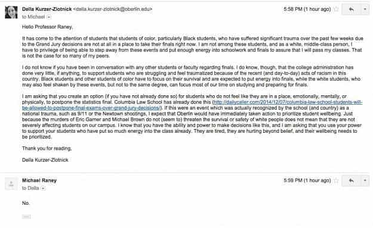

< < < Back
Team Of Imprisoned Felons Out-Debates Harvard Debate Squad – Return Of Kings
Ms. Nugent said the Harvard College Debating Union didn’t respond to parts of that argument…
— The Wall Street Journal
A month ago, the illustrious Harvard debate team had their backsides handed to them by a small group of New York prisoners. Whilst credit should be given to the hard work of the men from Eastern New York Correctional Facility, especially as they seek to turn their lives around, the outcome demonstrates the serious intellectual shortcomings being bred by Ivy League and other prestigious American universities.
The best part, aside from the fact the Harvard team had won a national title only a little while before, was that the prisoners had to argue for a grossly non-SJW position: denying undocumented children right of enrolment in American schools.
2015 has not been a great year for the reputations of Ivy League schools. The protracted debacle at Columbia University, where inveterate attention seeker Emma Sulkowicz was allowed to perpetually stalk and harass her innocent ex-boyfriend, demonstrates how the rule of law has now suffered its tenth death on elite American campuses.
Recently, my colleague Matt Forney covered the prima donna egos of Yale students after husband-and-wife academics decided not to lay down draconian and politically correct orders about how students could dress for Halloween.
It may be hard to directly trace what went so hideously wrong for the Harvard team but it is undeniable that the perilously pro-SJW atmosphere in Cambridge, Massachusetts has dumbed down its students. Socially and professionally, a Harvard degree still means a lot. But is it equipping its students for life in the real world?
A case in point: Harvard and Yale alumni may be grossly overrepresented in fields such as politics and wishy-washy academia, but they are less likely to lead Fortune 500 companies, where actual results, not rhetoric, matter much more.
Part of a much wider trend

Sadly, the Oberlin professor Michael Raney was one of only a few academics willing to openly defy the princess mentality of SJW students after the Ferguson grand jury decision.
Columbia Law School postponed exams last year after the Ferguson grand jury decision not to indict Officer Darren Wilson (but strangely declined to offer any mass commemoration for an actual tragedy, like nearly three dozen elite American soldiers dying in an Afghan War helicopter crash in 2011). Harvard and Georgetown law students rushed to join the fray for special consideration, too. In response, a Fox News column astutely highlighted that:
This won’t prepare them for tough judges, unscrupulous clients or merciless partners at the law firms they hope to work for.
And to think that this network is widely derided by liberals as supporting anything but common sense!
Going back to the prisoners and Harvard students’ debate, the biggest problem the young undergraduates faced was that they didn’t even address much of what the felons put forward in argument. Across the Atlantic, this was the same dilemma that the Bristol University Feminist Society’s Francesca Collins found herself in during a very recent campus interview.
In trying to defend the drive to exclude Milo Yiannopoulous from campus entirely, she could not explain why Milo was in any sense a threat to the safety of students. Defeated and in total shock, she promptly hung up on her interviewer.
SJW presuppositions, drilled into undergraduates in many countries over at least several years, are elevated to a realm of incontestability, in the same vein as the law of gravity. Whether “I believe women” in the context of unverified sexual assault allegations or the automatic presumption that any police shooting is either a racist lynching by bullet or police brutality, indoctrinated students are taught that they do not need to prove something that cannot be refuted. It just is.
It will only get worse
Ivy League SJWs getting their asses handed to them, however justified, is rare in modern society. From the media to politicians, the system is designed to protect them and marginalize positions that contradict them.
Look around you and there are plenty of examples of Ivy League SJWs or their ideological allies getting away with pure nonsense. Tragically, both of the leading candidates for the 2016 Democratic Presidential nomination, Hillary Clinton and Bernie Sanders, are unleashing the blatantly false gender pay gap scam. Sanders may not be an Ivy Leaguer but his rhetoric is identical to the Yale-educated Hillary Clinton.
The new generation is worse still. Harvard Law School students this year slammed their own professors, many of them fundamentally liberal themselves, for arguing that sexual assault policies should have some semblance of due process found in the court system. These are the misguided or plain fascistic “leading” lawyers of the future.
Hope exists, though. The debate against the New York prison team highlights the massive limitations of the SJW narrative. When required to construct actual arguments in a setting they do not control, students educated in the most politically correct environments tend to crumble.
And long may this crumbling continue.
Read More: Harvard University Jumps The Shark